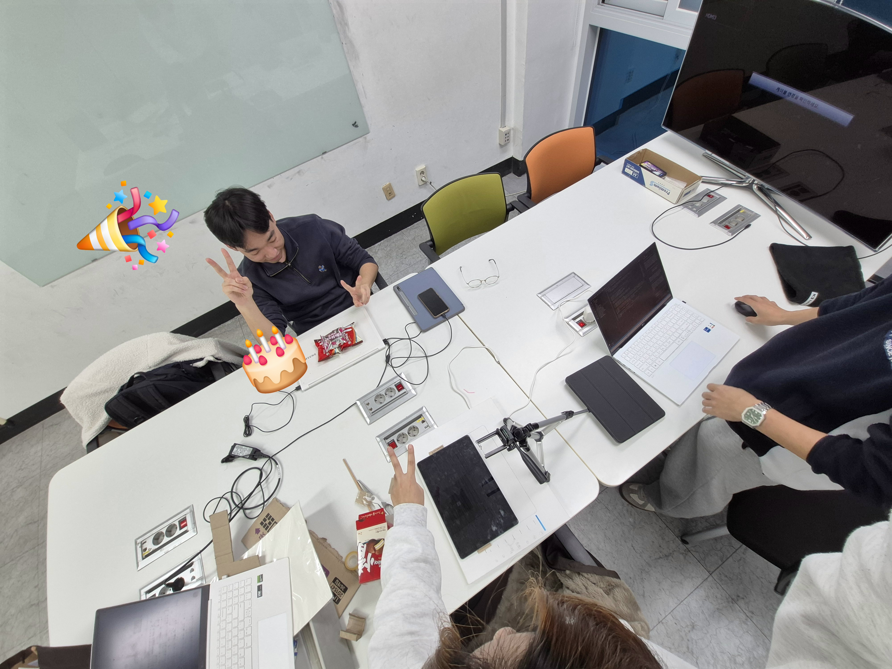

05-3 트리의 앙상블 정리 + 좌표 보정 실험 개요
1. 혼공머신 05-3 「트리의 앙상블」 정리
1-1. 앙상블 학습이란
이사님이 "베스트 머신러닝 알고리즘을 찾아 보고"하라고 하자, 홍 선배가 엘리베이터에서 "나무 말고 숲을 봐"라는 알쏭달쏭한 한 마디를 남깁니다. 검색해 보니 랜덤 포레스트(Random Forest)라는 알고리즘이 보입니다.
다만 "가장 좋은 알고리즘"이 따로 있는 것은 아닙니다. 문제마다 다를 수 있고, 보편적으로 성능이 좋아도 미리 단정해서는 안 됩니다.
앙상블 학습은 여러 개의 모델을 훈련시키고 각 모델의 예측을 취합하여 최종 결과를 만드는 학습 방식입니다.
- 쉬운 예시: 어려운 시험을 한 사람만 풀면 실수할 수 있지만, 여러 사람이 각자 풀고 다수결로 답을 정하면 개인의 실수가 서로 상쇄되어 더 정확해집니다. 앙상블도 같은 원리입니다.
- 분류: 각 트리의 클래스별 확률을 평균하거나 다수결로 최종 클래스를 결정합니다.
- 회귀: 각 트리의 예측값을 평균합니다.
큰 흐름은 두 가지입니다.
| 흐름 | 방식 | 대표 알고리즘 |
|---|---|---|
| 배깅(Bagging) | 트리를 독립적으로 만들어 평균·투표 | 랜덤 포레스트, 엑스트라 트리 |
| 부스팅(Boosting) | 트리를 순서대로 추가하며 이전 모델의 오차를 보완 | 그레이디언트 부스팅, 히스토그램 기반 부스팅 |
1-2. 정형 데이터와 비정형 데이터
지금까지 다룬 생선의 길이·높이·무게나 와인의 알코올 도수·당도·pH는 CSV에 가지런히 정리되어 있습니다. 이처럼 행과 열로 구조화된 데이터를 정형 데이터(structured data)라고 부르며, CSV·데이터베이스·엑셀로 저장하기 쉽습니다. 프로그래머가 다루는 대부분의 데이터가 여기에 해당하고, 앙상블 학습은 이 정형 데이터에서 특히 뛰어난 성능을 냅니다.
반대로 이 책의 글 같은 텍스트, 디지털카메라 사진, 음악 파일처럼 표로 표현하기 어려운 데이터를 비정형 데이터(unstructured data)라고 합니다. 규칙성을 찾기 어려워 전통적인 머신러닝으로는 모델을 만들기 까다롭고, 7장에서 배울 신경망 알고리즘이 주로 사용됩니다.
참고: 텍스트나 사진도 데이터베이스에 저장할 수는 있습니다(NoSQL 등). 여기서는 보편적인 사례를 구분한 것입니다.
1-3. 랜덤 포레스트 — 대표 주자
랜덤 포레스트는 결정 트리를 랜덤하게 만들어 나무의 숲을 만들고, 각 결정 트리의 예측을 사용해 최종 예측을 만듭니다. 기본적으로 100개의 결정 트리를 사용하며, 안정적인 성능 덕분에 앙상블을 적용할 때 가장 먼저 시도해 보길 권하는 알고리즘입니다.
어려운 점 ① 부트스트랩 샘플(Bootstrap Sample)이 무엇이고 왜 필요한가?
각 트리를 훈련하기 위한 데이터를 원본 훈련 데이터에서 랜덤하게 뽑는데, 이때 뽑았던 샘플을 다시 가방에 넣고 또 뽑습니다. 그래서 한 샘플이 중복되어 추출될 수 있고, 기본적으로 부트스트랩 샘플은 훈련 세트와 같은 크기로 만들어집니다.
- 예: 1,000개의 샘플이 든 가방에서 1,000번 뽑으면 어떤 샘플은 여러 번 뽑히고, 어떤 샘플은 한 번도 뽑히지 않습니다.
- 반 30명 중 30장을 뽑는다고 생각해도 쉽습니다. 뽑은 사람을 다시 넣고 뽑으므로 3번 뽑히는 사람도, 한 번도 안 뽑히는 사람도 생깁니다.
- 왜 하나요? 모든 트리가 같은 데이터로 공부하면 똑같이 틀려서 앙상블의 의미가 없어집니다. 중복을 허용한 무작위 추출이 트리 사이에 다양성을 만들고, 이것이 훈련 세트 과대적합을 막고 검증·테스트 세트에서 안정적인 성능을 얻게 해 줍니다.
어려운 점 ② 노드마다 특성 일부를 무작위로 선택하는 이유
각 노드를 분할할 때 전체 특성 중 일부만 무작위로 고른 다음, 그 중에서 최선의 분할을 찾습니다.
- 분류 모델(
RandomForestClassifier)은 기본적으로 전체 특성 개수의 제곱근만큼 선택합니다. 특성이 4개라면 노드마다 2개를 랜덤하게 고릅니다. - 회귀 모델(
RandomForestRegressor)은 전체 특성을 사용합니다. - 와인 데이터 특성이
[알코올 도수, 당도, pH]라면 어떤 노드는 (당도, 알코올), 어떤 노드는 (pH, 당도)를 보고 분할을 정합니다. - 결과적으로 하나의 특성에 과도하게 집중하지 않고 여러 특성이 훈련에 기여할 기회를 얻어 과대적합이 줄고 일반화 성능이 높아집니다.
어려운 점 ③ OOB(Out of Bag) 점수
부트스트랩 샘플을 만들 때 포함되지 않고 남는 샘플이 있습니다. 1,000개에서 중복을 허용해 1,000번 뽑으면 한 샘플이 한 번도 뽑히지 않을 확률은 약 36.8%입니다.
이 남은 샘플을 마치 검증 세트처럼 써서, 부트스트랩 샘플로 훈련한 결정 트리를 평가할 수 있습니다. RandomForestClassifier에서 oob_score=True로 지정하면 각 결정 트리의 OOB 점수를 평균해 출력합니다.
- 책 예제: 교차 검증 검증 점수 0.891, OOB 점수 0.893으로 거의 같은 결과.
- OOB 점수를 쓰면 교차 검증을 대신할 수 있어서 훈련 세트에 더 많은 샘플을 사용할 수 있습니다.
결과와 해석 (책의 와인 예제)
| 구분 | 훈련 점수 | 검증 점수 | 특성 중요도 [알코올, 당도, pH] |
|---|---|---|---|
| 단일 결정 트리 | - | - | [0.123, 0.869, 0.008] (당도에 몰림) |
| 랜덤 포레스트 | 0.997 | 0.891 | [0.232, 0.500, 0.268] (당도 감소, 알코올·pH 증가) |
| OOB 점수 | - | 0.893 | - |
단일 트리에서는 당도에 거의 몰려 있었지만, 랜덤 포레스트에서는 특성을 랜덤하게 선택한 결과 여러 특성이 고르게 기여합니다. 다소 과대적합이 보이지만 이 예제는 단순하고 특성이 적어 하이퍼파라미터 튜닝으로 크게 나아지지는 않습니다.
1-4. 엑스트라 트리
엑스트라 트리도 기본적으로 100개의 결정 트리를 훈련하고, 전체 특성 중 일부를 랜덤하게 선택해 노드를 분할하는 등 랜덤 포레스트와 매우 비슷합니다. 차이점은 두 가지입니다.
- 부트스트랩 샘플을 사용하지 않고 각 결정 트리를 만들 때 전체 훈련 세트를 사용합니다.
- 노드를 분할할 때 가장 좋은 분할을 찾지 않고 무작위로 분할합니다. 2절 확인 문제에서 다룬
DecisionTreeClassifier의splitter='random'이 바로 엑스트라 트리가 사용하는 결정 트리입니다.
하나의 결정 트리에서 무작위로 분할하면 성능이 낮아지겠지만, 많은 트리를 앙상블하면 과대적합을 막고 검증 세트 점수를 높이는 효과가 있습니다. 무작위로 노드를 나누기 때문에 최적 분할 탐색 계산이 줄어들어 빠른 것이 장점이고, 무작위성이 더 크므로 보통 랜덤 포레스트보다 더 많은 트리를 훈련해야 합니다.
- 책 예제: 교차 검증
0.997 / 0.889(랜덤 포레스트와 비슷) - 특성 중요도:
[0.202, 0.522, 0.276]— 결정 트리보다 당도 의존성이 작음 - 회귀 버전:
ExtraTreesRegressor
1-5. 그레이디언트 부스팅
그레이디언트 부스팅은 깊이가 얕은 결정 트리를 사용하여 이전 트리의 오차를 보완하는 방식으로 앙상블합니다. 사이킷런의 GradientBoostingClassifier는 기본적으로 깊이가 3인 결정 트리를 100개 사용합니다. 랜덤 포레스트나 엑스트라 트리가 트리를 독립적으로 만드는 것과 달리, 이 방식은 트리를 순서대로 추가합니다.
이름의 '그레이디언트'는 4장의 경사 하강법과 연결됩니다. 손실 함수를 산으로 생각하고 가장 낮은 곳을 찾아 내려오는데, 가중치와 절편을 조금씩 바꾸는 대신 결정 트리를 계속 추가하면서 내려갑니다. 분류에는 로지스틱 손실 함수를, 회귀에는 평균 제곱 오차 함수를 사용합니다.
- 한 번에 크게 움직이면 과대적합될 수 있으므로 깊이가 얕은 트리를 쓰고, 학습률로 속도를 조절합니다. 학습률 기본값은
0.1입니다. - 기본 모델 교차 검증:
0.888 / 0.872→ 과대적합이 거의 없음. - 트리 500개 + 학습률 0.2:
0.946 / 0.878→ 트리를 5배 늘려도 과대적합을 잘 억제. subsample: 훈련 세트 중 일부 비율만 사용 → 확률적 경사 하강법·미니배치 경사 하강법과 비슷한 효과.- 특성 importance:
[0.159, 0.680, 0.161]→ 랜덤 포레스트보다 당도에 더 집중. - 트리를 순서대로 추가해야 해서 병렬 처리가 어렵고
n_jobs매개변수가 없어 훈련이 느린 편입니다. 회귀 버전은GradientBoostingRegressor.
1-6. 히스토그램 기반 그레이디언트 부스팅
정형 데이터를 다루는 머신러닝 알고리즘 중 가장 인기가 높은 알고리즘입니다.
- 입력 특성을 먼저 256개의 구간으로 나누기 때문에 노드를 분할할 때 최적의 분할을 매우 빠르게 찾습니다.
- 256개 구간 중 하나를 떼어 놓고 누락된 값을 위해 사용하므로, 입력에 결측이 있어도 따로 전처리할 필요가 없습니다.
- 사이킷런의
HistGradientBoostingClassifier는 트리 개수 대신 부스팅 반복 횟수를 뜻하는max_iter를 사용합니다. - 책의
enable_hist_gradient_boosting임포트는 사이킷런 1.0부터 불필요합니다(experimental 모듈 아래에서 벗어남). - 와인 데이터 교차 검증:
0.932 / 0.880→ 그레이디언트 부스팅보다 조금 높고 과대적합도 잘 억제. 테스트 정확도 0.872(2절 랜덤 서치 단일 트리 0.86).
순열 중요도(permutation_importance())
특성을 하나씩 랜덤하게 섞어서 모델 성능이 어떻게 변하는지 관찰해 중요도를 계산합니다. 훈련·테스트 세트 모두에 적용할 수 있고, 사이킷런의 다른 추정기 모델에도 쓸 수 있습니다. n_repeats는 랜덤하게 섞을 횟수입니다.
| 데이터 | 중요도 [알코올, 당도, pH] |
|---|---|
| 훈련 세트 | [0.089, 0.234, 0.080] |
| 테스트 세트 | [0.060, 0.202, 0.049] → 당도에 조금 더 집중 |
다른 라이브러리
- XGBoost:
tree_method='hist'로 히스토그램 기반 방식 사용,cross_validate()와 함께 사용 가능. 책 결과0.956 / 0.880. - LightGBM: 마이크로소프트가 만든 빠르고 최신 기술이 적용된 라이브러리. 책 결과
0.936 / 0.880.
1-7. 네 모델 비교
| 모델 | 방식 | 특징 | 속도 | 강점 |
|---|---|---|---|---|
| 랜덤 포레스트 | 배깅 | 부트스트랩 + 노드별 특성 부분 선택 | 병렬 가능 | 대표적이고 안정적, OOB 점수 |
| 엑스트라 트리 | 배깅 계열 | 부트스트랩 없음 + 무작위 분할 | 빠름 | 강한 무작위성, 과대적합 완화 |
| 그레이디언트 부스팅 | 부스팅(순차) | 얕은 트리로 이전 오차 보완 | 느림 | 높은 성능, 학습률로 복잡도 제어 |
| 히스토그램 기반 GB | 부스팅 + 256-bin | 구간화 + 결측 구간 | 가장 빠름 | 속도·성능·결측 처리 균형 |
확인 문제 답
- 여러 모델의 예측을 취합하는 방식 → 앙상블 학습
- 비정형 데이터 → 이미지 데이터
- 기본적으로 부트스트랩 샘플을 사용하는 알고리즘 → 랜덤 포레스트
2. 우리가 할 실험 — 대략적인 개요
주제: 외부 자기장에 의한 스마트패드 터치펜 인식 오류 분석 및 머신러닝 기반 좌표 보정
EMR 방식의 스마트패드로 필기할 때 주변의 자석이나 전자기기가 접근하면 다음 두 가지 오류가 발생합니다.
- 좌표 왜곡(Bowing / Coordinate Distortion): 직선을 그려도 펜 포인터가 실제 펜촉 위치와 다른 곳으로 밀려 나가 직선이 곡선으로 휘어 기록됩니다.
- 터치 미인식(Dead Zone): 자기장이 임계치 이상으로 강한 특정 영역에서 필기가 인식되지 않고 선이 끊깁니다.
왜 하는가? 이런 인식 오류를 단순화된 조건에서 분석하고, 측정한 데이터로 좌표 보정 모델을 만들어 왜곡된 궤적을 원래의 직선으로 복원할 수 있는지 확인하기 위해서입니다.
- 패드 내부 회로 비대칭, 필압, 펜 기울기 같은 부차 요인은 제외하고 오직 외부 정자기장에 의한 왜곡만을 원인으로 봅니다.
- 태블릿만 놓았을 때의 전압을 기준 영점으로 잡고, 외부 자석을 놓았을 때 변한 전압에서 영점을 뺀 순수 외부 전압 변화량만을 머신러닝 입력으로 사용합니다.
- 학습에는 세기가 다른 자석 1·2·3을 쓰고, 검증에는 학습에서 분리된 실생활 기기인 무선이어폰(버즈) 충전 케이스를 사용합니다.
3. 결과 화면과 좌표 보정
3-1. [Image 1] x, y 좌표 추출 결과
아래가 첨부해주신 x,y좌표 추출결과.png 결과 화면입니다. 직선을 그렸는데도 인식 좌표가 자기장 때문에 휘어서 곡선처럼 나오고, 특정 구간에서는 선이 끊겨 보이는 형태입니다.

이미지 속 개별 숫자·좌표값은 제가 직접 판독할 수 없었습니다(이 모델은 이미지 입력을 지원하지 않아
Cannot read "x,y좌표 추출결과.png"오류가 발생했습니다). 위 화면을 그대로 첨부했으며, 말씀해주신 대로 이 화면에서 좌표를 하나하나 절점으로 따서 모델 입력으로 사용합니다.
3-2. 좌표를 하나하나 절점으로 따는 이유
좌표를 하나하나씩 다 절점으로 따냈다는 것은, 펜이 지나간 궤적을 연속된 선이 아니라 점들의 좌표 (x, y) 시퀀스로 측정했다는 뜻입니다.
각 절점마다 다음을 함께 기록합니다.
- 홀 센서의 전압 변화량
- 간섭원까지의 거리와 상대 위치
- 인식된 좌표
- 기준 좌표와의 오차
- 필기 끊김 여부
즉 각 절점이 머신러닝에서 말하는 하나의 샘플이 되고, 그때그때 측정한 값들이 특성이 됩니다. 05-1~05-3에서 배운 "샘플 × 특성" 구조가 그대로 적용되는 부분입니다. 이 절점 데이터를 모델에 넣어 오차를 예측하고, 예측한 오차만큼 좌표를 되돌려 보정합니다.
3-3. 보정에 사용하는 모델과 활용 방법
① 모델 1 — 로지스틱 회귀: Dead Zone 사전 판별
간섭원까지의 물리적 거리와 원천 자기장 세기를 입력으로 받아, 해당 위치에서 필기가 끊길지(1) 정상적으로 써질지(0)를 확률로 예측합니다. 확률이 0.5가 되는 지점을 풀어 필기 끊김이 시작되는 임계 거리를 도출하고, 분류 정확도(Accuracy)와 F1-Score로 판별 성능을 검증합니다.
- 타겟 누수(Target Leakage)를 막기 위해 이 모델에는 회귀 모델에서 쓰는 관측 거리가 아니라 물리적 기준 거리를 사용합니다.
- 먼저 어디가 위험 구간인지 판별해 두어야 뒤의 회귀 보정에서 끊긴 구간을 구분할 수 있습니다.
② 모델 2-A — 다변수 다항 회귀 (Baseline): 좌표 왜곡 보정
필기가 정상 인식된 구간의 절점 데이터를 사용합니다.
- 입력: 간섭원과의 상대 좌표 성분, 거리, 자기장 세기
- 출력: 그 지점의 가로·세로 왜곡 오차
- 단일 직선 경로에서는 관측 거리에 따른 2차 다항 회귀식, 여러 간섭원과 자기장 세기를 함께 다룰 때는 교차항을 포함한 다변수 2차 다항 회귀식을 사용합니다. 곡선으로 휘어진 모양을 2차항으로 표현하는 것입니다.
- 외삽 시 발산하는 것을 막기 위해 왜곡이 발생하는 유효 반경 안에서만 보정식을 적용하고 그 밖에서는 오차를 0으로 처리합니다.
- 최종 복원: 보정 좌표 = 인식 좌표 − 예측 오차
③ 모델 2-B — RBF 커널 기반 SVR (제안 모델): 더 정교한 보정
같은 절점 데이터를 사용하지만, 입력 4차원 특성 벡터의 단위와 스케일이 서로 다르므로 먼저 StandardScaler로 Z-점수 표준화를 합니다.
- 결정 트리나 랜덤 포레스트는 스케일링이 필요 없지만, SVR은 거리 기반 커널을 쓰기 때문에 표준화가 필요합니다(05-1에서 배운 차이를 활용한 부분).
- 표준화된 입력에 가우시안 RBF 커널을 적용해 단순한 2차 다항식으로는 잡기 어려운 복잡한 비선형 왜곡을 포착하고, 가로·세로 왜곡 오차를 각각 예측합니다.
- 다항 회귀보다 유연하게 휘어진 궤적을 복원하는 것이 제안 모델의 장점입니다.
④ 끊긴 구간 복원 — 스플라인 보간
Dead Zone 구간에서 미인식된 점은 좌표가 NaN이므로 회귀 모델의 학습 데이터에서 제외(dropna)합니다. 선이 끊긴 부분은 그대로 두면 궤적이 비어 있으므로:
- 진입 직전 절점과 빠져나온 직후 절점을 먼저 위의 회귀 모델(모델 2)로 보정하고
- 그 사이 끊어진 구간을 선형 보간 또는 3차 스플라인 보간법(Cubic Spline Interpolation)으로 이어서 전체 선을 복원합니다.
⑤ 결과 확인 방법
평면 위에 다음 네 선을 겹쳐 그려 직선이 복원되는지 시각적으로 비교합니다.
- 기준 실제 직선
- 보정 전 왜곡된 선
- 다항 회귀(모델 2-A) 보정 후 선
- SVR과 스플라인 보간을 거친 최종 보정 선
정량적으로는 결정계수 R²(모델의 설명력), RMSE(보정 전후 위치 오차), 직선성 편차(기준 직선으로부터 예측 궤적까지의 수직 거리)로 복원 성능을 확인합니다.
4. 🎂 생일 축하 (서프라이즈)
조원중에 생일이있어서 다같이 축하해주는 시간도 가졌답니다. 🎉
